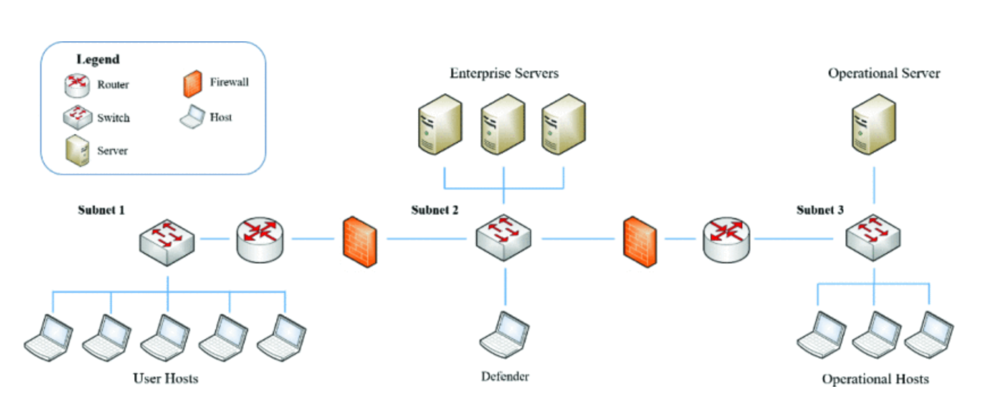
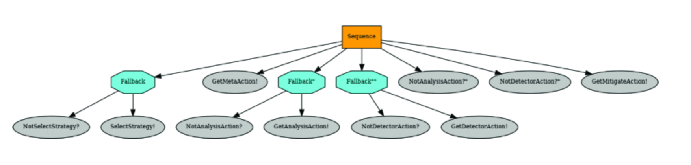
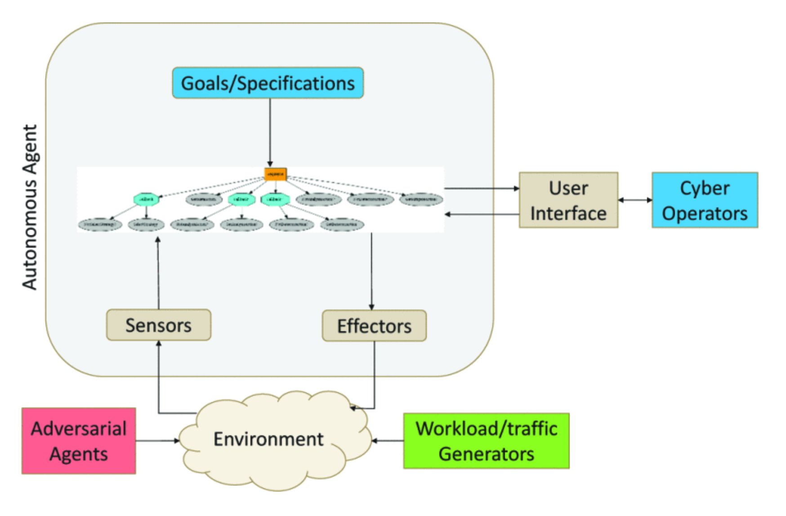
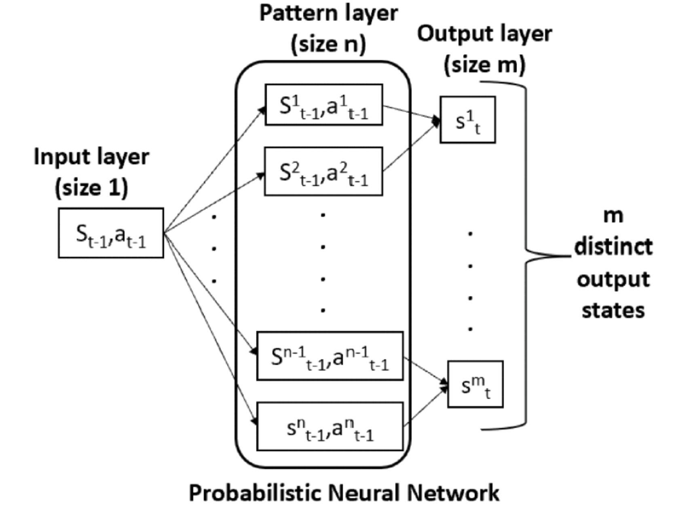
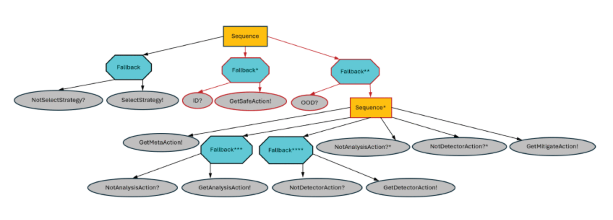
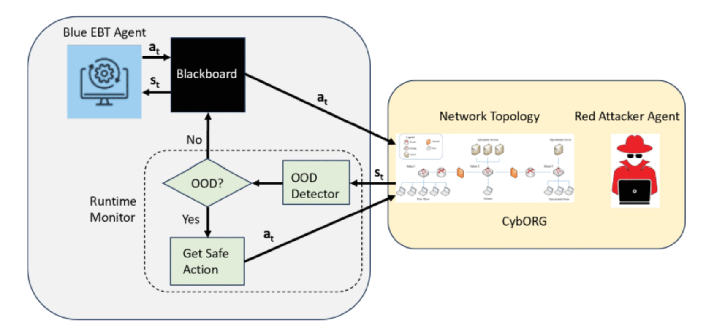

Ankita Samaddar
Cybersecurity | AI | Cyber-Physical Systems | Networks
Cybersecurity | AI | Cyber-Physical Systems | Networks
I am a Postdoctoral Fellow at Vanderbilt University since Feb 2024. I received PhD degree in Computer Science and Engineering from Nanyang Technological University (NTU), Singapore in 2022. Currently, my research lies at the intersection of Cybersecurity, Neurosymbolic AI and Machine Learning.
Prior to joining Vanderbilt University, I worked for one year between 2022 and 2023 as a Research Fellow at Continental-NTU Corporate Lab, Singapore. I received my Bachelor of Engineering (B.E.) degree in Computer Science and Technology from Indian Institute of Engineering Science and Technology, (IIEST), Shibpur in 2015 and Master of Technology (M.Tech) degree in Computer Science from Indian Statistical Institute, (ISI), Kolkata in 2017.
Designing RL-based neurosymbolic autonomous cyber agents for enterprise networks aims to combine the adaptability of machine learning with the reliability and interpretability of symbolic reasoning. Enterprise networks are complex, dynamic environments containing heterogeneous devices, services, and security policies. Traditional rule-based cyber defense systems struggle to adapt to evolving threats, while purely data-driven reinforcement learning (RL) approaches often lack transparency, safety guarantees, and policy control. A neurosymbolic framework addresses these challenges by integrating RL-driven decision making with symbolic representations of network knowledge, security policies, and operational constraints.
We use Behavior Trees as neurosymbolic cyber agents. Behavior trees are interpretable, reactive, and modular agents with learning-enabled components. We develop an approach to design autonomous cyber defense agents using behavior trees wit learning-enabled components. We evaluate the proposed approach in an autonomous cyber environment, the CybORG CAGE Challenge 2. We develop a software architecture and evaluate the effectiveness of the agents under different network defense scenarios, e.g., adaptive cyber-attacks.
Publication: Nicholas Potteiger, Ankita Samaddar, Hunter Bergstrom and Xenofon Koutsoukos, "Designing Robust Cyber-Defense Agents with Evolving Behavior Trees", IEEE International Conference on Assured Autonomy (ICAA), 2024 Paper.



Autonomous cyber agents use modern defense techniques by adopting intelligent agents with conventional and learning-enabled components. These intelligent agents are trained via reinforcement learning (RL) algorithms and can learn, adapt to, rason about and deploy security rules to defens networked computer systems while maintaining critical operational workflows. However, the knowledge available during training about the state of the operational networks and environment may be limited. The agents should be trustworthy so that they can reliably detect situations they cannot handle, and hand them over to cyber experts.
We develop an out-of-distribution (OOD) Monitoring algorithm that uses Probabilistic Neural Network (PNN) to detect anomalous or OOD situations of RL-based agent witht discrete states and discrete actions. We demonstrate the effectiveness of our approach by integrating our approach into a behavior tree with learning enabled components and evaluate the efficacy of our approach in a simualted cyber environment under different adversarial strategies.
Publication: Ankita Samaddar, Nicholas Potteiger, Xenofon Koutsoukos, "Out-of-Distribution Detection for Neurosymbolic Autonomous Cyber Agents", International Conference on AI and Cybersecurity (ICAIC), 2025 (Best Paper Award) Paper Slides



Email: anki.samaddar@gmail.com